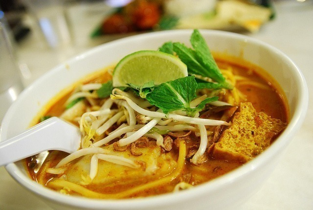

Pratos típicos
A culinária neozelandesa é bastante diversificada e engloba quitutes de vários outros países, principalmente da Inglaterra, devido à sua colonização, e do Sudeste Asiático e Índia, pelo grande número de imigrantes vindos dessas regiões.
